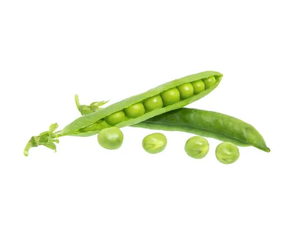
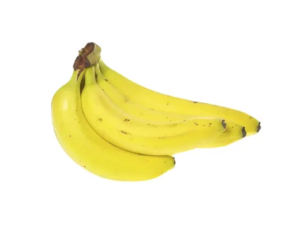
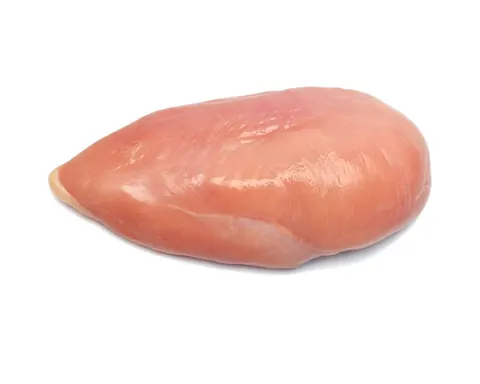

In short
- Start with smooth purees, then move to thicker, lumpier and chopped textures.
- Spoon-feeding and soft finger foods work well together.
- Whichever way you go, sit your baby upright and stay with them the whole meal.
Start smooth
At around 6 months, it's easiest for babies to eat very smooth mashed, pureed or strained foods. It can take time to adjust to new textures, and your baby may cough, gag or spit up while learning.
Then build up textures
As your baby's skills develop, move on to thicker and lumpier foods, then finely chopped or ground foods. Trying different textures helps your baby:
- Learn to accept and like a variety of foods
- Develop fine motor skills, like pinching and picking up food
- Develop chewing skills
When finger foods fit in
Once your baby can sit up and bring their hands or objects to their mouth, they can start feeding themselves finger foods. Choose foods that are soft, easy to swallow and cut into small pieces, for example:
- Small pieces of banana
- Scrambled eggs
- Well-cooked pasta
- Well-cooked, finely chopped chicken
- Well-cooked, cut-up potatoes or peas
- Small pieces of soft bread
You don't have to choose
Spoon-feeding and finger foods work well together. Many babies eat purees from a spoon while they practice picking up soft pieces. By about 12 months, most babies can easily feed themselves with their fingers.
Whichever way you go
- Offer foods that dissolve easily or don't need chewing, cut small.
- Sit your baby upright, and stay with them the whole meal.
- Keep meals calm and unhurried.
What is baby-led weaning?
Baby-led weaning (BLW) skips spoon-fed purees: babies feed themselves soft, whole finger foods from the start. Your baby decides what goes into their mouth, how fast they eat and when they stop.
- Listening to appetite: putting your baby in charge supports their own hunger and fullness cues.
- Hands-on learning: holding foods of different shapes and textures builds grasping skills and comfort with new textures.
- Family meals: eating the same foods alongside you helps your baby learn by watching.
Choking and iron with BLW
Research, including the BLISS study, found that babies offered appropriately prepared finger foods did not choke more often than spoon-fed babies. Prepare foods to be soft and the right size, and stay with your baby while they eat.
Iron needs planning: purees can easily include iron-fortified cereal, while self-fed meals need iron-rich foods like soft meats, beans or lentils offered on purpose.
Foods in this article

Peas
Banana Egg
Egg
Chicken
How to serve each one at every age is in the app's food guide.
Every child is different
Every child's relationship with food develops in its own way. These are supportive ideas, not clinical solutions. If your child strongly refuses food, is losing weight or has trouble swallowing, talk to your pediatrician or a pediatric feeding specialist.
Sources
- Tastes and Textures · CDC
- When, What, and How to Introduce Solid Foods · CDC
- When Can Babies Start Solid Foods? · AAP (HealthyChildren.org)
- Fingers, Spoons, Forks, and Cups · CDC
- Choking Hazards · CDC
- Iron · CDC
All articles, recipes, guides, tips and chat answers in Mama & Baby Bites are for general information and education only. They are not medical, pediatric or nutritional advice, and they don't replace care from a qualified professional. In an emergency, call 911.